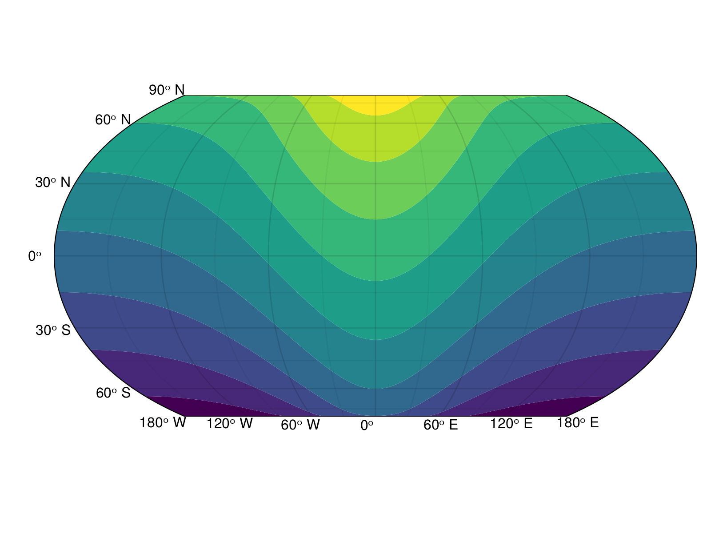
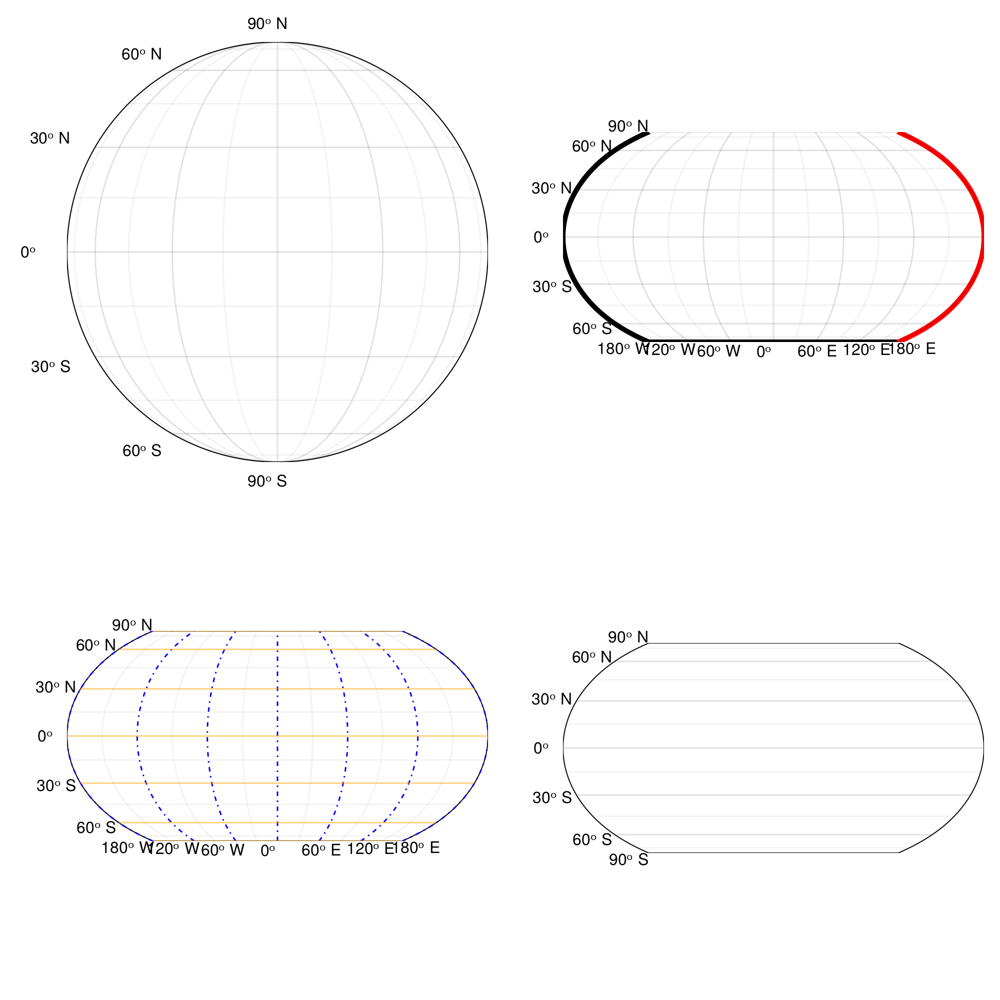
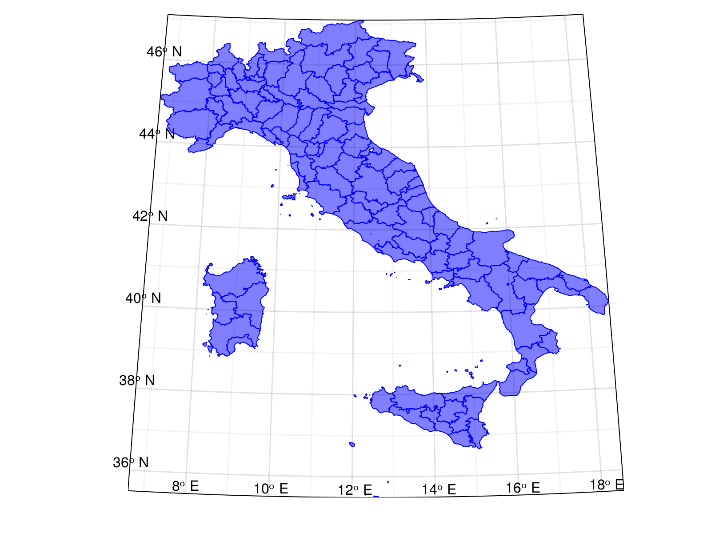
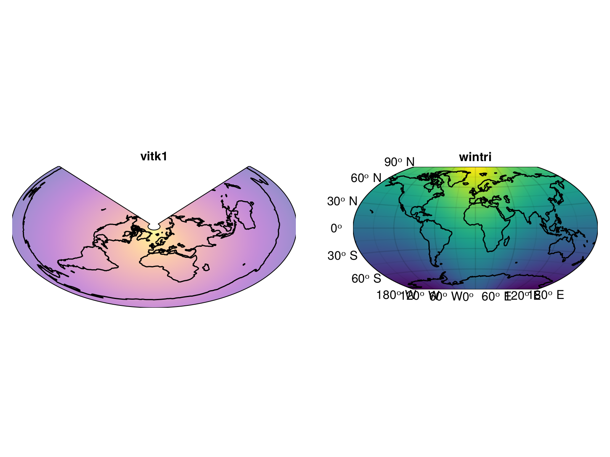
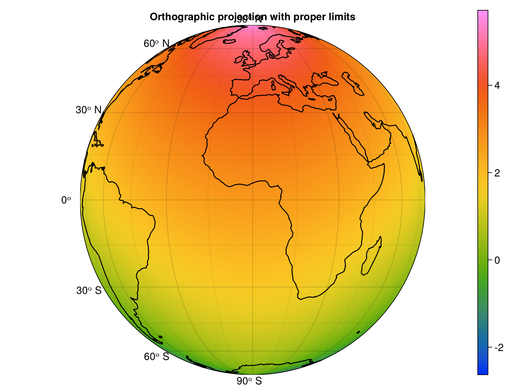
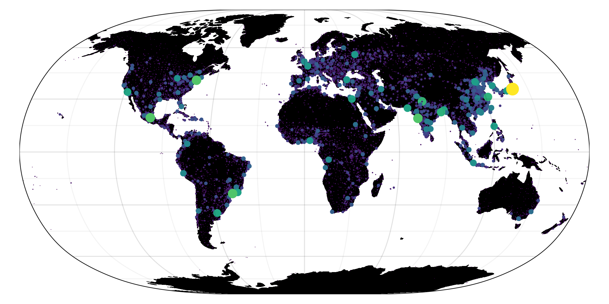
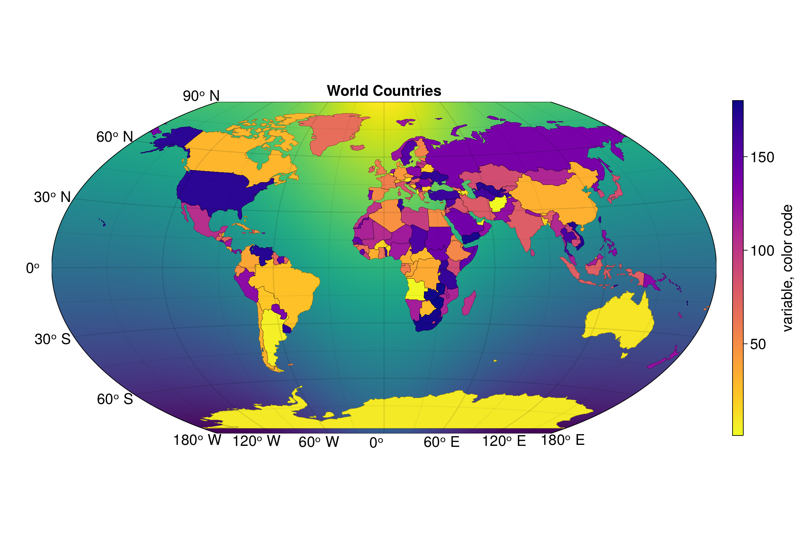

Contourf
using GeoMakie, CairoMakie
lons = -180:180
lats = -90:90
# Create some field of values across `lons` and `lats`
# This grid can be of any density, but note that the
# time it takes to plot scales with the grid size!
field = [exp(cosd(l)) + 3(y/90) for l in lons, y in lats]
# Surface example
fig = Figure()
ax = GeoAxis(fig[1,1])
contourf!(ax, lons, lats, field; shading = false)
fig
Axis configuration
using Makie, CairoMakie, GeoMakie
fig = Figure(resolution = (1000,1000))
axs = [GeoAxis(fig[i, j]) for i in 1:2, j in 1:2]
# axis 1 - I want an orthographic projection.
axs[1, 1].scene.transformation.transform_func[] = Proj.Transformation("+proj=latlong","+proj=ortho")
xlims!(axs[1, 1], -90, 90)
# axis 2 - wacky spines
axs[1, 2].topspinevisible = false
axs[1, 2].rightspinecolor = :red
axs[1, 2].spinewidth = 5
# axis 3 - messing with grids
axs[2, 1].xgridcolor = :blue
axs[2, 1].xgridstyle = :dashdot
axs[2, 1].ygridcolor = (:orange, 0.5)
axs[2, 1].ygridwidth = 2.0
# axis 4 - customizing ticks
axs[2, 2].xticks = -180:10:180
axs[2, 2].xticklabelsvisible[] = false
hidexdecorations!(axs[2, 2])
fig
Italy's states
using CairoMakie, GeoMakie
using GeoMakie.GeoJSON
using Downloads
using GeometryBasics
using GeoInterface
# Acquire data
it_states = Downloads.download("https://github.com/openpolis/geojson-italy/raw/master/geojson/limits_IT_provinces.geojson")
geo = GeoJSON.read(read(it_states, String))
fig = Figure()
ga = GeoAxis(fig[1, 1]; dest = "+proj=ortho +lon_0=12.5 +lat_0=42", lonlims=(12, 13), latlims = (40, 44))
poly!(ga, geo; strokecolor = :blue, strokewidth = 1, color = (:blue, 0.5), shading = false);
datalims!(ga)
fig
Projections
using GeoMakie, CairoMakie, Makie
lons = -180:180
lats = -90:90
field = [exp(cosd(l)) + 3(y / 90) for l in lons, y in lats]
fig = Figure()
ax1 = GeoAxis(fig[1, 1], dest = "+proj=vitk1 +lat_1=45 +lat_2=55",
coastlines = true, title = "vitk1")
ax2 = GeoAxis(fig[1, 2], dest = "+proj=wintri",
coastlines = true, title = "wintri")
surface!(ax1, lons, lats, field; shading = false, colormap = (:plasma, 0.45))
surface!(ax2, lons, lats, field; shading = false)
hidedecorations!(ax1)
fig
Orthographic projection
using GeoMakie, CairoMakie
# Limited-domain projections (like orthographic) must have
# their limits correctly set!
# If the limits are too large, you may get a blank figure.
lons = -180:180
lats = -90:90
field = [exp(cosd(l)) + 3(y/90) for l in lons, y in lats]
fig = Figure()
ga = GeoAxis(
fig[1, 1],
dest="+proj=ortho",
lonlims = automatic,
coastlines = true,
title = "Orthographic projection with proper limits"
)
# hidedecorations!(ga)
sp = surface!(ga, lons, lats, field; shading = false, colormap = :rainbow_bgyrm_35_85_c69_n256)
cb = Colorbar(fig[1, 2], sp)
fig
World Population centers
# This example was contributed by Martijn Visser (@visr)
using Makie, CairoMakie, GeoMakie
using GeoMakie.GeoJSON
using GeometryBasics
using Downloads
source = "+proj=longlat +datum=WGS84"
dest = "+proj=natearth2"
url = "https://raw.githubusercontent.com/nvkelso/natural-earth-vector/master/geojson/"
land = Downloads.download(url * "ne_110m_land.geojson")
land_geo = GeoJSON.read(read(land, String))
pop = Downloads.download(url * "ne_10m_populated_places_simple.geojson")
pop_geo = GeoJSON.read(read(pop, String))
begin
fig = Figure(resolution = (1000,500))
ga = GeoAxis(
fig[1, 1];
source = source,
dest = dest
)
ga.xticklabelsvisible[] = false
ga.yticklabelsvisible[] = false
poly!(ga, land_geo, color=:black)
popisqrt = map(pop_geo) do geo
popi = geo.pop_max
popi > 0 ? sqrt(popi) : 0.0
end
mini, maxi = extrema(popisqrt)
size = map(popisqrt) do popi
normed = (popi .- mini) ./ (maxi - mini)
return (normed * 20) .+ 1
end
scatter!(ga, pop_geo, color=popisqrt, markersize=size)
fig
end
Field and countries
# This example was taken from Lazar Alonso's
# BeautifulMakie.jl repository. It has some really
# good stuff - check it out!
using Makie, CairoMakie, GeoMakie
import Downloads
using GeoMakie.GeoJSON
using GeometryBasics
using GeoInterface
# https://datahub.io/core/geo-countries#curl # download data from here
worldCountries = GeoJSON.read(read(Downloads.download("https://raw.githubusercontent.com/johan/world.geo.json/master/countries.geo.json"), String))
n = length(worldCountries)
lons = -180:180
lats = -90:90
field = [exp(cosd(l)) + 3(y/90) for l in lons, y in lats]
fig = Figure(resolution = (1200,800), fontsize = 22)
ax = GeoAxis(
fig[1,1];
dest = "+proj=wintri",
title = "World Countries",
tellheight = true,
)
hm1 = surface!(ax, lons, lats, field; shading = false)
translate!(hm1, 0, 0, -10)
hm2 = poly!(
ax, worldCountries;
color= 1:n,
colormap = Reverse(:plasma),
strokecolor = :black,
strokewidth = 0.25
)
cb = Colorbar(fig[1,2]; colorrange = (1, n), colormap = Reverse(:plasma), label = "variable, color code", height = Relative(0.65))
fig
Rotating Earth
using Makie, CairoMakie, GeoMakie
destnode = Observable("+proj=ortho")
fig = Figure()
ga = GeoAxis(
fig[1, 1],
coastlines = true,
dest = destnode,
lonlims = Makie.automatic
)
image!(-180..180, -90..90, rotr90(GeoMakie.earth()); interpolate = false)
hidedecorations!(ga)
record(fig, "rotating_earth_ortho.mp4"; framerate=30) do io
for lon in -90:90
ga.title[] = string(lon) * "°"
destnode[] = "+proj=ortho +lon_0=$lon"
xlims!(ga, lon-90, lon+90)
recordframe!(io)
end
end